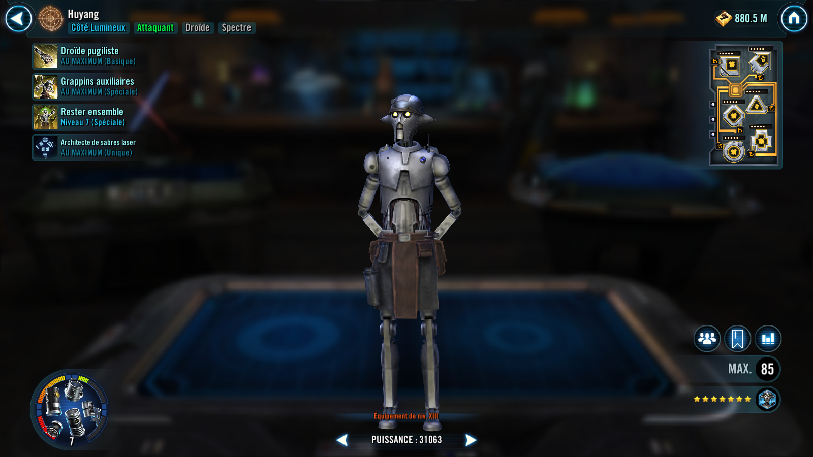
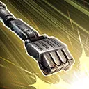

Huyang
A Droid Attacker and strong ally to Ahsoka Tano with the ability to bring out the best in her and her squad
A Droid Attacker and strong ally to Ahsoka Tano with the ability to bring out the best in her and her squad


Deal Physical damage to target enemy and Expose them for 1 turn. If it's Huyang's turn and the target had Stagger, Stun them for 1 turn as well.
Deal Physical damage to target enemy and Spectre allies gain Speed Up for 1 turn. Deal an additional instance of damage for each other Light Side Droid ally or ally with Exile at the start of the battle. This ability gains 10% damage per active Spectre ally. Inflict a stack of Off Balance to target enemy for 1 turn for each ally that has removed Exile this battle, which can't be copied or evaded.
Call all Light Side allies to assist, then, if there are two or more Light Side Droid or Spectre allies, the strongest ally and weakest ally gain Advantage, Damage Immunity, and Offense Up for 1 turn and Tenacity Up for 3 turns. Otherwise, Light Side Droid and Spectre allies recover 100% Health and Protection. If either the strongest or weakest other ally has Exile, they gain 75 Speed for 1 turn instead.
Omicron Boost : While in Territory Battles: Dispel all ally debuffs and enemy buffs. All Light Side allies recover 50% Health and Protection. Spectre allies recover an additional 50% Health and Protection. Reduce all ally Light Side Droids' and Spectre's cooldowns by 1. Light Side Droids and Spectre allies gain 25% Defense Penetration (stacking) for the rest of the battle and 20% Turn Meter
At the start of battle Jedi allies gain 21% Max Protection, Light Side Droid allies gain 34% Critical Damage, and Spectre allies gain 55% Offense until the end of battle. If the ally in the Leader slot is Spectre and a Galactic Legend at the start of battle: ally Jedi, any Ahsoka Tano, and Padawan Sabine Wren gain Jedi Lessons for 3 turns at the start of their first turn. If they had Jedi Lessons whenever Huyang gains any version of History of the Galaxy, the duration is reset to 3 turns.
If a Light Side ally evades an attack or resists a debuff, ally Light Side Droids gain 5% Critical Damage and 5% Offense (stacking, max 100%) until the end of battle.
The first time that an ally Spectre loses Exile, Huyang gains History of the Galaxy, Part One for the rest of the battle. Whenever Huyang gains any version of History of the Galaxy, ally Spectres gain 50% bonus Protection for 2 turns. Whenever he gains Part Three, reset the cooldown of Stay Together.
While Huyang has History of the Galaxy, Part One: ally Jedi, any Ahsoka Tano, and Padawan Sabine Wren gain Force Connection (max 10 stacks) whenever they use a Basic ability until the first time Huyang is defeated; whenever a second ally Spectre loses Exile for the first time, this ability upgrades to History of the Galaxy, Part Two
While Huyang has History of the Galaxy, Part Two: Remove the max stack limit whenever ally Jedi, any Ahsoka Tano, and Padawan Sabine Wren gain Force Connection; if there were 5 Spectre allies at the start of battle and there are no allies with Exile, this ability upgrades to History of the Galaxy, Part Three
While Huyang has History of the Galaxy, Part Three: ally Jedi, any Ahsoka Tano, and Padawan Sabine Wren gain Force Connection whenever they use an ability until the first time Huyang is defeated